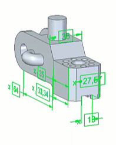
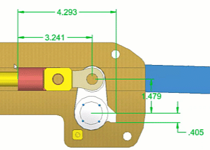

Arrange dimensions automatically
You can arrange the linear dimensions with the customized stack pitch and group them according to their types (stack and chain).
-
Choose the PMI tab→Dimensions group→Arrange Dimensions
 command.
command. -
In the Arrange Dimension dialog box, under Options specify the following:
-
Stack pitch multiplier: Specify this value to compute and set the distance between stacked dimensions. The stack pitch value is defined in the dimension style.
-
Create Alignment Set
 : Select to group the stacked and chained dimensions while arranging the dimensions.
: Select to group the stacked and chained dimensions while arranging the dimensions.
Note:-
To automatically arrange and move the selected dimensions as a group, create an alignment set.
-
To automatically arrange and move the selected dimensions individually instead of as a group, turn off Create Alignment Set.
-
-
Under Selection, use the following options to select the dimensions to arrange:
-
Select All Shown
 : Selects all the PMI that are currently displayed
: Selects all the PMI that are currently displayed -
Select Parallel
 : Shows and selects PMI dimensions parallel to the selected dimensions
: Shows and selects PMI dimensions parallel to the selected dimensions -
Show and Select All
 : Displays all PMI and adds them to the select set
: Displays all PMI and adds them to the select set -
Deselect All
 : Deselects all the PMIs
: Deselects all the PMIs
Note:-
If you select the dimensions and run the command, only the selected dimensions are arranged.
-
If you activate a model view, only the dimensions for that model view are displayed and selected.
-
-
Under Arrange, select between the following:
-
Arrange: Arranges the dimensions around the displayed model extents

-
Arrange to Area: Lets you specify the area to arrange the dimensions around it

-